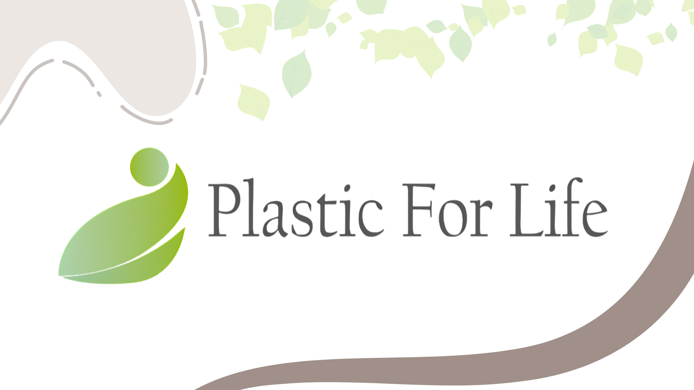
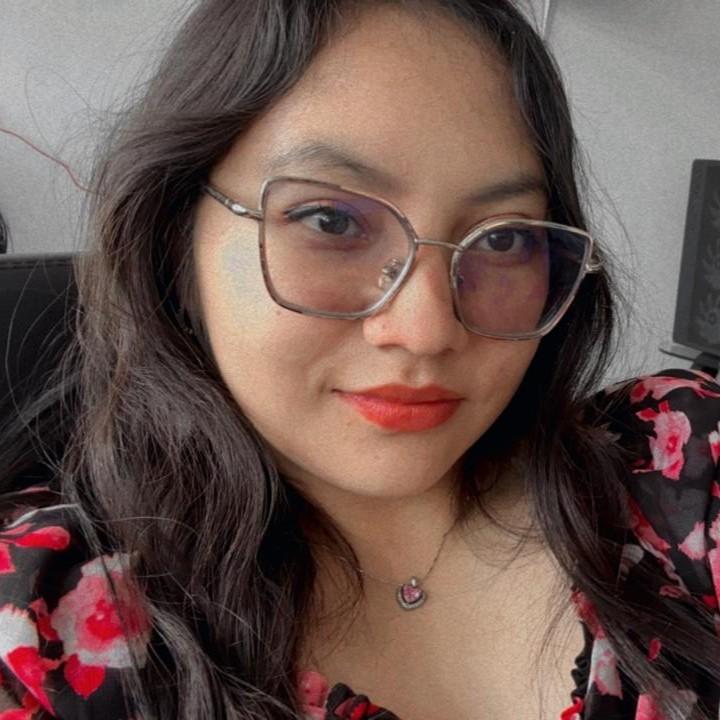
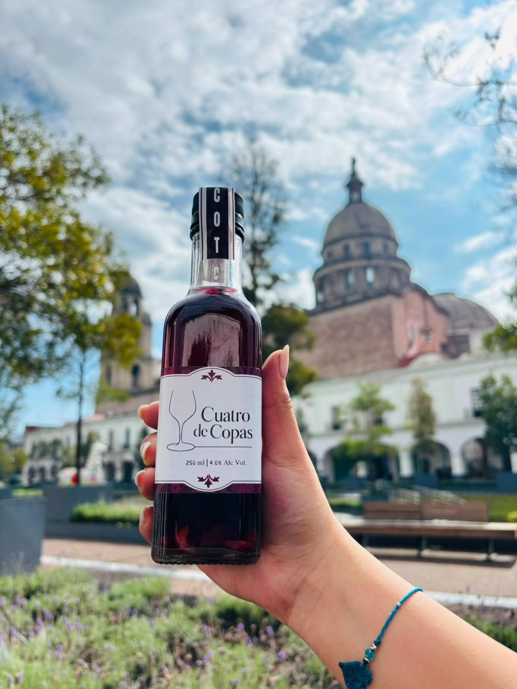

BRANDING · DISEÑO GRÁFICO
Plastic
For Life
Desarrollo de identidad corporativa para una recicladora: naming, logotipo, manual de identidad, aplicaciones, tarjetas y boceto de campaña publicitaria.
↗
CV ↗MERCADOTECNIA · CONTENIDO · DISEÑO
Construyo experiencias de marca y contenido que conectan estrategia, creatividad y comunicación.
Mercadotecnia con una mirada creativa.
Soy licenciada en Mercadotecnia y titulada del bachillerato tecnológico en Diseño Gráfico Digital. Esta combinación me permite abordar proyectos comerciales desde una perspectiva estratégica y creativa.
Más sobre mí →Una selección de proyectos académicos y prácticos.

BRANDING · DISEÑO GRÁFICO
Desarrollo de identidad corporativa para una recicladora: naming, logotipo, manual de identidad, aplicaciones, tarjetas y boceto de campaña publicitaria.
↗
MARKETING · CONTENIDO · EXCEL
Desarrollo de identidad visual para Cuatro de Copas, acompañada de una propuesta de diseño de etiqueta y materiales gráficos para comunicación en redes sociales. El proyecto también contempló la organización y seguimiento de ventas mediante bases de datos, integrando diseño y gestión de información para apoyar la operación comercial.
EXPERIENCIA PROFESIONAL · COMUNICACIÓN
Experiencia práctica en una institución educativa privada, participando en la creación de contenido y material visual para redes sociales, atención al cliente, seguimiento de prospectos y gestión de información en bases de datos.
Perfil profesional
Me interesa crear comunicación que no solo se vea bien, sino que tenga una intención clara: presentar, conectar, orientar y convertir.
He trabajado en creación de contenido para redes sociales, producción de material visual, atención al cliente, seguimiento de prospectos y gestión de información mediante bases de datos.
Disfruto especialmente colaborar en equipo, participar en sesiones de brainstorming y transformar ideas en piezas concretas.
Experiencia profesional y proyectos que han dado forma a mi perfil.
LICEO PEDRO DE GANTE | TOLUCA, ESTADO DE MÉXICO
Creación y toma de contenido para redes sociales, apoyo en comunicación digital, atención a clientes y registro de información en bases de datos.
CONCIERTO LUIS MIGUEL | TOLUCA, ESTADO DE MÉXICO
Orientación interna y apoyo ante situaciones surgidas durante el evento.
ICATI | ZINACANTEPEC, ESTADO DE MÉXICO
Elaboración de planes de estudio para la implementación del curso de Diseño Gráfico Digital.
Formación académica
Instituto de Estudios Superiores ISIMA · Toluca
Cédula profesional: en trámiteBachillerato Tecnológico de la Universidad Mexiquense de Toluca
Cédula profesional: 13874217Comunicación · Dirección de Empresas de Entretenimiento
Comercialización y Distribución · Retail Omnicanal y Multicanal
Un perfil híbrido para proyectos que necesitan comunicación, contenido y una mirada visual consistente.
Planeación y elaboración de contenido para redes sociales y comunicación digital.
Material visual, identidad, etiquetas y piezas de comunicación con herramientas de Adobe y Canva.
Desarrollo y presentación de productos, comercialización y seguimiento de prospectos.
Gestión de información, bases de datos, hojas de cálculo y trabajo colaborativo.
Disponible para nuevas oportunidades